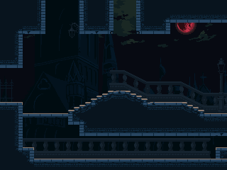
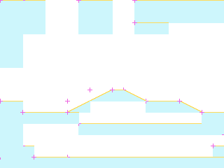
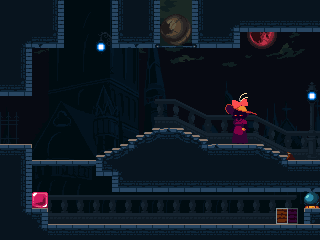

rmCity15
ROOM_080_S001 · ROOM 80 · rectangle [0, 0, 320, 240]


Статическая реконструкция v4; не native gameplay screenshot. Голубой: маски; жёлтый: опоры; розовый: pivot.
Исходный OBJT sprite_index, кадр 0 — исследовательский кандидат

Не исполнены native Create/Step/Draw, shaders, FSM и динамические spawn paths.
Готовность
Статическая основа: ready. Полная native-сцена: blocked_native_audit. Игровая сборка: не создана.
Переработать только подтверждённые статические визуальные слои под будущую авторскую игру. Сохранить сетку, границы, читаемость опор и места стыков. Новые сюжет, сцены и рисунки ещё не утверждены.
Зависимости
Future art direction and target asset classifier · Native actor/spawner/state/VFX audit before complete scene handoff
Рабочая очередность предложена по связности. Исполнитель: художница; личность, сроки и новые рисунки не назначены.
Depth слои: 3, 2, 0, -1. Опоры и ограничения: точные ROOM transforms и отдельные авторские маски; соседство не переосмыслять.
Входы, выходы и соседи
Входы: E002_00, E078_01, E081_00
Выходы: E080_00, E080_02
{"section": "ROOM_080_S002", "kind": "shared_image_boundary", "direction": "right", "physical_passage": "unknown; drawing boundary is not a door"}
{"section": "ROOM_078_S001", "room": 78, "edge": "E080_00", "kind": "authored_transition", "direction": "left", "conditions": "room-level gate evidence; not evaluated", "source_anomaly": null}
{"section": "ROOM_081_S001", "room": 81, "edge": "E080_02", "kind": "authored_transition", "direction": "down", "conditions": "room-level gate evidence; not evaluated", "source_anomaly": null}
Исходные условия и механизмы комнаты
[
{
"x": 157,
"y": 48,
"object": 415,
"instance_id": 101383,
"creation_code": 3567,
"scale_x": 1.0,
"scale_y": 1.0,
"color": 4294967295,
"rotation": 0.0,
"source_room": 80,
"source_object": "CityBallWall",
"author_depth": 0,
"derived": false,
"flags": [
74,
75
],
"kind": "gate",
"asset": "INTERACT_522",
"manual": false,
"interaction_radius": 28
},
{
"x": 544,
"y": 88,
"object": 379,
"instance_id": 101395,
"creation_code": -1,
"scale_x": 1.0,
"scale_y": 1.0,
"color": 4294967295,
"rotation": 0.0,
"source_room": 80,
"source_object": "Switch4",
"author_depth": 0,
"derived": false,
"flags": [
75
],
"kind": "orb",
"asset": "INTERACT_504",
"interaction_radius": 224
},
{
"x": 304,
"y": 192,
"object": 378,
"instance_id": 101396,
"creation_code": -1,
"scale_x": 1.0,
"scale_y": 1.0,
"color": 4294967295,
"rotation": 0.0,
"source_room": 80,
"source_object": "Switch3",
"author_depth": 0,
"derived": false,
"flags": [
74
],
"kind": "orb",
"asset": "INTERACT_504",
"interaction_radius": 224
},
{
"x": 195,
"y": 48,
"object": 415,
"instance_id": 101398,
"creation_code": 3568,
"scale_x": -1,
"scale_y": 1.0,
"color": 4294967295,
"rotation": 0.0,
"source_room": 80,
"source_object": "CityBallWall",
"author_depth": 0,
"derived": false,
"flags": [
74,
75
],
"kind": "gate",
"asset": "INTERACT_522",
"manual": false,
"interaction_radius": 28,
"source_direction": "right"
}
]Проверенные assetID
Кандидаты и блокеры
SPRT_284, SPRT_494, SPRT_504, SPRT_513, SPRT_522, SPRT_530, SPRT_534, SPRT_688
Полные авторские placements ↗ · Native-аудит ↗ · Очередь и возвраты ↗